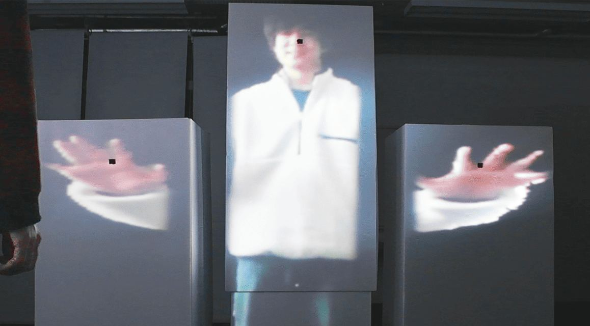
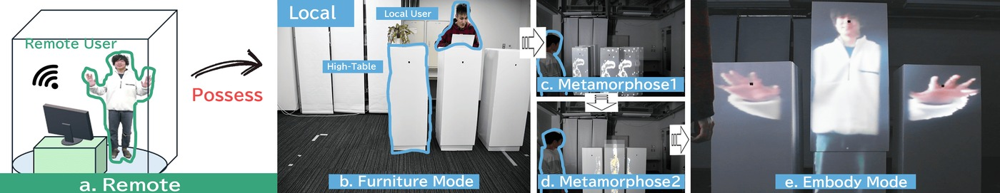
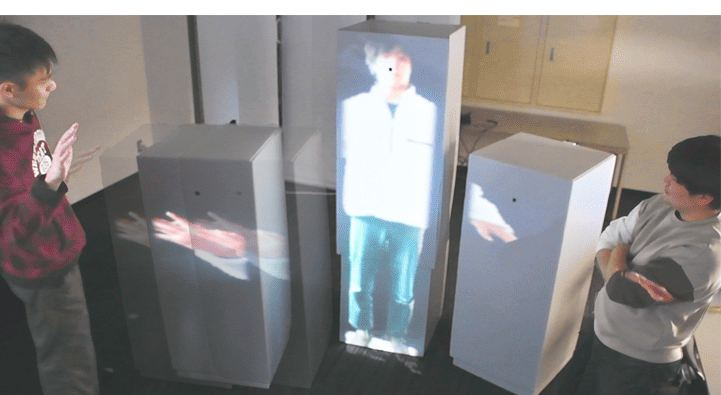

MorphCubes
- 年Year
- 2025
- かたちForm
- 形状が変わる家具、投影Shape-changing furniture, projection
- 発表Shown at
- 論文「MorphCubes: Adaptive Modular Robots for Dynamic Remote Human Embodiment」（Shima & Takashima、2025年）Paper "MorphCubes: Adaptive Modular Robots for Dynamic Remote Human Embodiment" (Shima & Takashima, 2025)
CHI EA '25 (Late-Breaking Work), Yokohama, ACM
インタラクション2025 インタラクティブ発表賞（PC推薦）Interaction 2025, Interactive Presentation Award (PC recommendation) (draft)
遠隔地の人の身体性を、部屋の中の家具型ロボットで表現する。Expressing a remote person's bodily presence through furniture-like robots in a room.
普段は机の高さの箱として置かれ、通話時に人の背丈まで伸びて、その人の姿と手を映す。用が済むと家具に戻る。Normally a box at table height, it extends to a person's height during a call and shows that person's figure and hands. When the call ends, it returns to being furniture.
ロボット側が変形することで、一つの物に複数の役割を持たせている。By changing the robot's shape, one object takes on several roles.